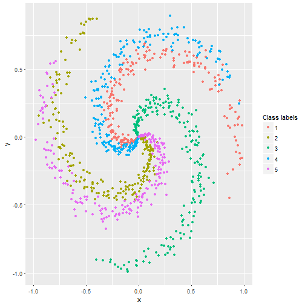

The search for optimal Neural Network architecture can be really time consuming process.
Figuring out what topology to use can be a tedious process.
No fast and easy way exist how to test different alternatives.
Matti Niemisto
The search for optimal Neural Network architecture can be really time consuming process.
Figuring out what topology to use can be a tedious process.
No fast and easy way exist how to test different alternatives.
Neural Network Architecture search tool
Fast and easy way to try out different topologies for a classification problem.
Parameter initialization and update during training handled automatically based on topology data.
Training error and accuracy plotted in a visual and informative way.
library(pracma)
library(ggplot2)
set.seed(1234);
points = 200;
classes = 5;
dimensionality = 2;
# data matrix (each row = single example)
X = matrix(rep(0), nrow = points*classes, ncol = dimensionality)
# class labels
y = matrix(rep(0), nrow = points*classes, ncol = 1)
for (j in 1:classes) {
ix = (points*(j-1)+1):(points*j)
r = linspace(0.0,1,points) # radius
t = linspace(j*4,(j+1)*4,points) + randn(1,points) * 0.2 # theta
X[ix,] = matrix(data = c(r*sin(t), r*cos(t)), ncol = 2)
y[ix,] = j
}
df <- as.data.frame(cbind(X,y))
colnames(df) <- c("x", "y", "Label")
p <- ggplot(df, aes(x = x, y = y, color = as.factor(Label))) +
geom_point() +
labs(color='Class labels')

Try different topologies in fast and easy manner.
Download the source code from GitHub and try with your own data.
Visit my shiny app at https://mattiniemisto.shinyapps.io/DDPCWMatti/